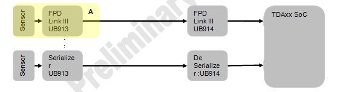
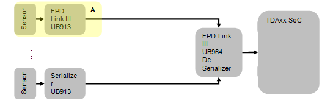

Please note as of Wednesday, August 15th, 2018 this wiki has been set to read only. If you are a TI Employee and require Edit ability please contact x0211426 from the company directory.
PDK/PDK Application Notes Video Driver Porting

Contents
- 1 Abstract
- 2 Overview
- 3 VPS I2C Utility
- 4 VIP Configuration
- 4.1 VIP Instance/Port
- 4.2 VIP External/Embedded Sync Signal
- 4.3 VIP Input Data Width
- 4.4 VIP Input Data Format
- 4.5 VIP Output Data Format
- 4.6 VIP Pixel Clock Polarity and SYNC Signal Polarity
- 4.7 VIP Input Video Timing
- 4.8 VIP Video Crop
- 4.9 VIP Interlaced/Progressive Input
- 4.10 TDA2Ex/AM571x/DRA72x Additional SOC Level Mux Setting
- 5 DSS Configuration
- 6 CAL Configuration
- 7 I2C and UART Configuration
- 8 Porting Board Module
- 9 Supporting New Sensor/Camera
Abstract
This application note describes the detailed steps in configuring VIP, DSS and ISS CAL video drivers to custom board. This includes board level pinmux changes, VIP/CAL data capture from sensors with different parameters and configuring DSS timing to support custom LCD
Overview
This application note describes the various steps in porting the video drivers (VIP, DSS & CAL) to custom board. This also explains how to port UART and I2C drivers which are typically used along with video drivers.
Below gives an overview of the various steps involved in the board bring-up. Kindly refer respective section for further details.
- Review the board schematics for VIP, DSS, UART and I2C signals and how the board level routing is done.
- Check the pin name to which the signals are connected to the SOC. Depending on this set the SOC level pinmux (mux mode). The pin mux can be set by using
Bsp_platformSetPinmuxRegs()platform API. The 1st parameter sets the mode, the 2nd parameter takes the register offset for the pin and the 3rd parameter sets the other mux mode parameters like pull-up/down enable/disable, input enable (output or bi-directional).- Note: In case of VIP, the pin direction should be set to bi-directional as all VIP pins acts as input.
- Note: In case of VIP, the pin direction should be set to bi-directional as all VIP pins acts as input.
Example Code Snippet:
/* PAD=VIN1B_CLK1_0, PIN=VIN3A_CLK0_6 */ Bsp_platformSetPinmuxRegs(6U, CTRL_CORE_PAD_VIN1B_CLK1, BSP_PLATFORM_IOPAD_CFG_INPUTENABLE_BI);
- Review if any board level multiplexing is required for the video signals to propagate from external Sensor/LCD to the device pads. Review if any I2C IO expander or GPIO is used to select the required board level multiplexing. Depending on these, the application should do the required settings. (I2C Connectivity could be verified using utility mentioned in section 2)
- Review if any board level reset or powering-up is required for the external Sensor/LCD. Depending on these, the application should perform the required settings before reading/writing to the external Sensor/LCD.
- Program the external sensor or LCD using I2C read/write APIs. The application could use I2C read/write APIs
Bsp_deviceRawRead8(),Bsp_deviceRawWrite8()etc… present ininclude/devices/bsp_device.hfile. Refer board section to check the steps involved in using a different I2C instance. (I2C Connectivity could be verified using utility mentioned in section 2) - VIP and DSS have different configuration line embedded/discrete sync, 24/16/8-bit interface etc which could differ depending on board design and use cases. This needs to be reviewed and accordingly the VIP and DSS drivers should be configured from the application.
- Chip level Interrupt cross bar configuration needs to be performed for the VIP, DSS, UART and I2C interrupts to reach the CPU core. The default configuration is done as part of the “platform” module. If the customer application requires a different interrupt mapping, the cross bar setup should be done by the application by bypassing the default configuration by setting
isIrqXBarSettingReqparameter ofBsp_PlatformInitParamsto FALSE.
- Once the basic changes are done, individual bring-up of the interface should be done using below example before running the final use case or trying the capture to display loopback.
- DSS:
pdk/packages/ti/drv/vps/examples/dss/displayDss. Use this make command from pdk/packages/ti/build folder.gmake -s vps_examples_displayDss - VIP:
pdk/packages/ti/drv/vps/examples/capture/captureVip. Use this make command from pdk/packages/ti/build folder.gmake -s vps_examples_captureVip - VIP to DSS Loopback:
pdk/packages/ti/drv/vps/examples/vps/loopback. Use this make command from pdk/packages/ti/build folder.gmake -s vps_examples_loopback
- DSS:
VPS I2C Utility
Most the video systems either receive data from an external sensor and / or send data to an external peripheral (such as sensor, encoders, decoders etc… or associated peripherals such as muxes, IO expanders, etc…). These peripheral are typically controlled / programmed by an I2C.
Before attempting to bring up any video drivers, its recommended that connectivity to peripherals are established and slave addresses are verified.
Requirement: Kindly ensure to follow details in I2C and UART Configuration to port I2C driver.
This utility is a simple CCS console and command line based application that could be used to write / read from salves connected to TDAxx class of devices. Once the utility is executed a simple menu is displayed on CCS console and command are received from CCS console and executed.
VIP Configuration
This section describes the various VIP parameters that could possibly change when migrating to new sensor or board.
VIP Instance/Port
The VIP port parameter can be changed by passing instanceId parameter of Fvid2_create. This instance ID can be generated based on the VIP instance, slice and port using VPS_CAPT_VIP_MAKE_INST_ID macro.
Example Code Snippet:
Uint32 instId = VPS_CAPT_VIP_MAKE_INST_ID(VPS_VIP1, VPS_VIP_S0, VPS_VIP_PORTA); drvHandle = Fvid2_create(FVID2_VPS_CAPT_VID_DRV, instId, &createPrms, &createStatus, &cbPrms);
This instance ID along with driver ID (FVID2_VPS_CAPT_VID_DRV) and create parameters can be used to get a handle of the VIP driver for further operation. Below table shows the VIP port mapping to the driver instance ID.
| VIP Port | Driver Instance ID |
|---|---|
| VIN1A | VPS_CAPT_VIP_MAKE_INST_ID(VPS_VIP1, VPS_VIP_S0, VPS_VIP_PORTA)
|
| VIN1B | VPS_CAPT_VIP_MAKE_INST_ID(VPS_VIP1, VPS_VIP_S0, VPS_VIP_PORTB)
|
| VIN2A | VPS_CAPT_VIP_MAKE_INST_ID(VPS_VIP1, VPS_VIP_S1, VPS_VIP_PORTA)
|
| VIN2B | VPS_CAPT_VIP_MAKE_INST_ID(VPS_VIP1, VPS_VIP_S1, VPS_VIP_PORTB)
|
| VIN3A | VPS_CAPT_VIP_MAKE_INST_ID(VPS_VIP2, VPS_VIP_S0, VPS_VIP_PORTA)
|
| VIN3B | VPS_CAPT_VIP_MAKE_INST_ID(VPS_VIP2, VPS_VIP_S0, VPS_VIP_PORTB)
|
| VIN4A | VPS_CAPT_VIP_MAKE_INST_ID(VPS_VIP2, VPS_VIP_S1, VPS_VIP_PORTA)
|
| VIN4B | VPS_CAPT_VIP_MAKE_INST_ID(VPS_VIP2, VPS_VIP_S1, VPS_VIP_PORTB)
|
| VIN5A | VPS_CAPT_VIP_MAKE_INST_ID(VPS_VIP3, VPS_VIP_S0, VPS_VIP_PORTA)
|
| VIN5B | VPS_CAPT_VIP_MAKE_INST_ID(VPS_VIP3, VPS_VIP_S0, VPS_VIP_PORTB)
|
| VIN6A | VPS_CAPT_VIP_MAKE_INST_ID(VPS_VIP3, VPS_VIP_S1, VPS_VIP_PORTA)
|
| VIN6B | VPS_CAPT_VIP_MAKE_INST_ID(VPS_VIP3, VPS_VIP_S1, VPS_VIP_PORTB)
|
VIP External/Embedded Sync Signal
The VIP video interface mode parameter to select embedded sync (BT.656/BT.1120) or external sync (HSYNC/VSYNC/AVID modes) can be performed by changing videoIfMode parameter of capture driver Vps_CaptCreateParams create parameter. The various interface modes supported and the corresponding macro to be used are given below
| Video Interface Mode | VIP Video Interface Mode Macro |
|---|---|
| Embedded Sync (BT656, BT1120)* | FVID2_VIFM_SCH_ES
|
| External Sync (HSYNC/VSYNC)** | FVID2_VIFM_SCH_DS_HSYNC_VSYNC
|
| External Sync (AVID/VSYNC)*** | FVID2_VIFM_SCH_DS_AVID_VSYNC
|
| Embedded Sync (Line Muxed) | FVID2_VIFM_MCH_LINE_MUX_ES
|
| Embedded Sync (Pixel Muxed) | FVID2_VIFM_MCH_PIXEL_MUX_ES
|
* BT.656 and BT.1120 can be selected by setting the interface with as 8-bit or 16-bit as described in next section.
** Most of the video sensors provide HSYNC and VSYNC signals. This is the typically used interface mode for sensors. In this mode, the VIP captures the entire video frame including horizontal and vertical blanking. The VIP parser crop parameters should be set in addition to this to get only the active video in memory. This is discussed in subsequent section.
*** When the AVID signal of the sensor is connected to the VIN AVID pad of VIP, this mode can be used. In this case, the VIP will capture only the active video.
Example Code Snippet:
Vps_CaptCreateParams createPrms; createPrms.videoIfMode = FVID2_VIFM_SCH_DS_HSYNC_VSYNC;
VIP Input Data Width
The VIP video interface width can be changed by setting videoIfWidth parameter of capture driver Vps_CaptCreateParams create parameter. The supported values are FVID2_VIFW_8BIT, FVID2_VIFW_16BIT and FVID2_VIFW_24BIT.
If the video sensor is providing 10, 12, 14 bit data, then this parameter should be set to FVID2_VIFW_16BIT and the VIP writes the data as 16-bit with zero padded to the MSB.
Note: 16-bit and 24-bit can be selected for only PORT A; PORT B doesn’t support 16-bit and 24-bit operation (only 8-bit is supported). Also when PORT A is selected for 16-bit and 24-bit, PORT B can’t be used, even for 8-bit operation.
Example Code Snippet:
Vps_CaptCreateParams createPrms; createPrms.videoIfWidth = FVID2_VIFW_16BIT;
VIP Input Data Format
The VIP input data format can be changed by setting inFmt.dataFormat parameter of VIP capture driver Vps_CaptVipParams parameter passed to IOCTL_VPS_CAPT_SET_VIP_PARAMS IOCTL. The various input data format supported and the corresponding macro to be used are given below.
| Video Input Data Format | VIP Video Input Data Format Macro |
|---|---|
| YUV (8-bit or 16-bit)* | FVID2_DF_YUV422P
|
| YUV 24-bit | FVID2_DF_YUV444P
|
| RGB 24-bit | FVID2_DF_RGB24_888
|
| 8-bit RAW/Bayer** | FVID2_DF_RAW08
|
| 16-bit RAW/Bayer** | FVID2_DF_RAW16
|
| 24-bit RAW** | FVID2_DF_RAW24
|
* In case of 8-bit YUV input, the VIP always expects input in UYVY format. Other formats are not natively supported by VIP. If the sensor inputs data in any other format (say YUYV), one could use the RAW 8-bit format and write the same data as 8-bit data at the VIP output. In this case no internal processing like CSC, SC or CHR-DS of VIP can be used.
** VIP doesn't natively support RAW input format or Bayer pattern input. The VIP driver uses YUV VIP parser setting and VPDMA data format to write back the data as is to the memory without doing any processing. Hence these formats are used for Bayer or any RAW input formats which doesn't require any processing.
Example Code Snippet:
Vps_CaptVipParams vipPrms; vipPrms.inFmt.dataFormat = FVID2_DF_YUV422P;
VIP Output Data Format
The VIP output data format can be changed by setting outStreamInfo[0].outFmt.dataFormat parameter of VIP capture driver Vps_CaptVipParams parameter passed to IOCTL_VPS_CAPT_SET_VIP_PARAMS IOCTL. The various output data format supported for the corresponding input format and the macro to be used are given below.
| Output Data Format | Supported Input Data Format | VIP Output Data Format Macro |
|---|---|---|
| YUV422 Interleaved - UYVY | FVID2_DF_YUV422P (8 or 16-bit interface) |
FVID2_DF_YUV422I_UYVY
|
| YUV422 Interleaved - YUYV | FVID2_DF_YUV422P (8 or 16-bit interface) |
FVID2_DF_YUV422I_YUYV
|
| YUV422 SP | FVID2_DF_YUV422P (8 or 16-bit interface) |
FVID2_DF_YUV422SP_UV
|
| YUV420 SP | FVID2_DF_YUV422P (8 or 16-bit interface) |
FVID2_DF_YUV420SP_UV
|
| YUV444 Interleaved | FVID2_DF_YUV422P (8 or 16-bit interface)FVID2_DF_YUV444P |
FVID2_DF_YUV444P
|
| RGB24 | FVID2_DF_YUV422P (8 or 16-bit interface) FVID2_DF_RGB24_888 |
FVID2_DF_RGB24_888
|
| 8-bit RAW | FVID2_DF_RAW08 |
FVID2_DF_RAW08
|
| 16-bit RAW | FVID2_DF_RAW16 |
FVID2_DF_RAW16
|
| 24-bit RAW | FVID2_DF_RAW24 |
FVID2_DF_RAW24
|
Example Code Snippet:
Vps_CaptVipParams vipPrms; vipPrms.outStreamInfo[0].outFmt.dataFormat = FVID2_DF_YUV422I_YUYV;
VIP Pixel Clock Polarity and SYNC Signal Polarity
The VIP pixel clock polarity can be changed by setting vipPortCfg.comCfg.pixClkEdgePol parameter of VIP capture driver Vps_CaptVipParams parameter passed to IOCTL_VPS_CAPT_SET_VIP_PARAMS IOCTL.
Along with setting the VIP parser clock polarity, it is important to set the clock inversion at the SOC level using Bsp_platformSetVipClkInversion() function.
Note: In case of embedded SYNC capture failure or is seeing data artifacts around images edges, then this is the most likely change needed as the pixel clock polarity decides the data sampling. If data is not sampled at the right edge, it could lead to data corruption and hence the no data gets detected for embedded sync inputs or results in artifacts.
The VIP HSYNC, VSYNC and AVID signal polarity can be changed by setting vipPortCfg.disCfg.<hsync/vsync/actvid>Pol parameter of VIP capture driver Vps_CaptVipParams parameter passed to IOCTL_VPS_CAPT_SET_VIP_PARAMS IOCTL.
Example Code Snippet:
Vps_CaptVipParams vipPrms; Vps_VipPortConfig vipPortCfg; VpsVipPortConfig_init(&vipPortCfg); vipPrms.vipPortCfg = &vipPortCfg; vipPrms.vipPortCfg->disCfg.actvidPol = FVID2_POL_HIGH; vipPrms.vipPortCfg->disCfg.vsyncPol = FVID2_POL_LOW; vipPrms.vipPortCfg->disCfg.hsyncPol = FVID2_POL_LOW; vipPrms.vipPortCfg->comCfg.pixClkEdgePol = FVID2_EDGE_POL_FALLING; Bsp_platformSetVipClkInversion(instId, TRUE); /* Or */ vipPrms.vipPortCfg->comCfg.pixClkEdgePol = FVID2_EDGE_POL_RISING; Bsp_platformSetVipClkInversion(instId, FALSE);
VIP Input Video Timing
VIP is agnostics to change in video timing. There are no parameters to set the input HSYNC and VSYNC timing. As long as the pixel clock is within 165 MHz and VSYNC interval is within reasonable FPS (say < 100), VIP is capable of capturing the data to memory.
VIP Video Crop
In HSYNC/VSYNC discrete sync capture mode, the VIP captures the entire video frame including horizontal and vertical blanking. The VIP parser crop parameters should be set to get only the active video in memory.
The VIP parser crop feature can be changed by setting vipPortCfg.actCropEnable and vipPortCfg.actCropCfg parameter of VIP capture driver Vps_CaptVipParams parameter passed to IOCTL_VPS_CAPT_SET_VIP_PARAMS IOCTL.
Example Code Snippet:
Vps_CaptVipParams vipPrms; Vps_VipPortConfig vipPortCfg; VpsVipPortConfig_init(&vipPortCfg); vipPrms.vipPortCfg = &vipPortCfg; vipPrms.vipPortCfg->actCropEnable = TRUE; vipPrms.vipPortCfg->actCropCfg.srcNum = 0U;/* Not used for single channel */ vipPrms.vipPortCfg->cropCfg.cropStartX = 0U; vipPrms.vipPortCfg->cropCfg.cropStartY = 0U; vipPrms.vipPortCfg->cropCfg.cropWidth = 1280U; vipPrms.vipPortCfg->cropCfg.cropHeight = 720U;
VIP Interlaced/Progressive Input
VIP and VIP driver is agnostics to interlaced or progressive input. In case of interlaced input, the VIP and the VIP driver always captures one field at a time similar to progressive frame. The driver returns the captured field ID as part of Fvid2_Frame.fid parameter when the frame is dequeued from the driver.
If merging of field is required (so as to give to display driver which takes frame instead of fields), then this should be done by the application by making use of buffer pitch (by setting pitch == line * 2) and also by taking corrective action when fields are swapped. This is illustrated in video loopback application in file pdk/packages/ti/drv/vps/examples/vps/loopback/src/Loopback_test.c TVP5158 loopback option.
TDA2Ex/AM571x/DRA72x Additional SOC Level Mux Setting
In case of TDA2Ex/AM571x/DRA72x, the VIP signals from the various pads going to the single VIP1 are multiplexed at SOC level. These are controlled by CTRL_CORE_VIP_MUX_SELECT register at the control module level. Refer "Pad Configuration" section of TDA2Ex TRM for more details.
DSS Configuration
This section describes the various DSS parameters that could possibly change when migrating to new LCD or board.
Note: IOCTL_VPS_DCTRL_SET_CONFIG, IOCTL_VPS_DCTRL_SET_VENC_OUTPUT and IOCTL_VPS_DCTRL_SET_VENC_PCLK_DIVISORS IOCTLs discussed in below sections are used for setting many parameters. Each of the sections discuss about a particular set of parameters with respective to that section. The IOCTL should be called only after setting all the parameters. This is not illustrated in the code snippet for simplicity.
DSS LCD/DPI Instance
The DSS display controller (DCTRL) driver uses graph (nodes/edges) to represent the DSS hardware. With this respect, how the video pipelines, the overlays and the DSS DPI output are connected is set by using numEdges and edgeInfo[] parameters of Vps_DctrlConfig structure.
Each connection is represented by start node and end node which is defined by VPS_DCTRL_DSS_* macros defined in pdk/packages/ti/drv/vps/include/vps/dss/vps_displayCtrlDataTypes.h header file. In order to change the LCD/DPI instance the end node should be set to VPS_DCTRL_DSS_DPI1_OUTPUT, VPS_DCTRL_DSS_DPI2_OUTPUT or VPS_DCTRL_DSS_DPI3_OUTPUT. This is illustrated in below code snippet.
Example Code Snippet:
Vps_DctrlConfig dctrlCfg; dctrlCfg.useCase = VPS_DCTRL_USERSETTINGS; dctrlCfg.edgeInfo[0].startNode = VPS_DCTRL_DSS_VID1_INPUT_PATH; dctrlCfg.edgeInfo[0].endNode = VPS_DCTRL_DSS_LCD1_BLENDER; dctrlCfg.edgeInfo[1].startNode = VPS_DCTRL_DSS_GFX1_INPUT_PATH; dctrlCfg.edgeInfo[1].endNode = VPS_DCTRL_DSS_LCD1_BLENDER; dctrlCfg.edgeInfo[2].startNode = VPS_DCTRL_DSS_LCD1_BLENDER; dctrlCfg.edgeInfo[2].endNode = VPS_DCTRL_DSS_DPI1_OUTPUT; dctrlCfg.numEdges = 3; retVal = Fvid2_control(dctrlHandle, IOCTL_VPS_DCTRL_SET_CONFIG, &dctrlCfg, NULL);
Below table shows the DSS port mapping to the driver instance ID.
| DSS Port | Driver Node ID |
|---|---|
| VOUT1 | VPS_DCTRL_DSS_DPI1_OUTPUT
|
| VOUT2 | VPS_DCTRL_DSS_DPI2_OUTPUT
|
| VOUT2 | VPS_DCTRL_DSS_DPI3_OUTPUT
|
| HDMI | VPS_DCTRL_DSS_HDMI_OUTPUT
|
DSS Interface Format
The DSS interface type can be changed by setting dvoFormat, dataFormat and videoIfWidth parameter of Vps_DctrlOutputInfo passed to IOCTL_VPS_DCTRL_SET_VENC_OUTPUT IOCTL. The various output configuration possible and the corresponding settings is provided in below table.
| Interface Format | DVO Format | Data Format | Interface Width |
|---|---|---|---|
| 8-bit BT.656 (YUV422)* | VPS_DCTRL_DVOFMT_BT656_EMBSYNC |
FVID2_DF_YUV422I_YUYV |
FVID2_VIFW_08BIT
|
| 16-bit BT.1120 (YUV422)* | VPS_DCTRL_DVOFMT_BT1120_EMBSYNC |
FVID2_DF_YUV422I_YUYV |
FVID2_VIFW_16BIT
|
| RGB888 24-bit Discrete Sync | VPS_DCTRL_DVOFMT_GENERIC_DISCSYNC |
FVID2_DF_RGB24_888 |
FVID2_VIFW_24BIT
|
| RGB565 16-bit Discrete Sync | VPS_DCTRL_DVOFMT_GENERIC_DISCSYNC |
FVID2_DF_RGB16_565 |
FVID2_VIFW_16BIT
|
* Standard BT.656 and BT.1120 modes are not supported in TDA2xx and TDA2Ex platforms.
Example Code Snippet:
Vps_DctrlOutputInfo vencOutput; vencOutput.vencId = VPS_DCTRL_DSS_VENC_LCD1; vencOutput.dvoFormat = VPS_DCTRL_DVOFMT_GENERIC_DISCSYNC; vencOutput.dataFormat = FVID2_DF_RGB24_888; vencOutput.videoIfWidth = FVID2_VIFW_24BIT; retVal = Fvid2_control(dctrlHandle, IOCTL_VPS_DCTRL_SET_VENC_OUTPUT, &vencOutput, NULL);
DSS Pixel Clock Polarity and SYNC Signal Polarity
The DSS LCD pixel clock and SYNC signal polarity can be changed by setting pixelClkPolarity, actVidPolarity, hsPolarity and vsPolarity parameters of Vps_DctrlOutputInfo passed to IOCTL_VPS_DCTRL_SET_VENC_OUTPUT IOCTL.
Along with setting this DSS parameters, it is important to set the clock inversion at the SOC level using Bsp_platformSetLcdClkPolarity() function.
Example Code Snippet:
Vps_DctrlOutputInfo vencOutput; vencOutput.vencId = VPS_DCTRL_DSS_VENC_LCD1; vencOutput.pixelClkPolarity = VPS_DCTRL_POLARITY_ACT_LOW; vencOutput.actVidPolarity = VPS_DCTRL_POLARITY_ACT_HIGH; vencOutput.hsPolarity = VPS_DCTRL_POLARITY_ACT_LOW; vencOutput.vsPolarity = VPS_DCTRL_POLARITY_ACT_LOW; retVal = Fvid2_control(dctrlHandle, IOCTL_VPS_DCTRL_SET_VENC_OUTPUT, &vencOutput, NULL); Bsp_platformSetLcdClkPolarity(BSP_PLATFORM_VENC_LCD1, FVID2_POL_LOW);
DSS LCD Timing
The DSS LCD timing can be changed by setting vencInfo.modeInfo[0].mInfo parameters of DSS DCTRL driver Vps_DctrlConfig parameter passed to IOCTL_VPS_DCTRL_SET_CONFIG IOCTL.
The DSS DCTRL driver supports standard video timings. This can be selected by setting vencInfo.modeInfo[0].mInfo.standard to any supported video standards like 1080p60 (FVID2_STD_1080P_60), 720p60 (FVID2_STD_720P_60) etc. If the timing required by the LCD panel is different from the supported standard timings, then vencInfo.modeInfo[0].mInfo.standard should be set to FVID2_STD_CUSTOM and all other timing parameters of vencInfo.modeInfo[0].mInfo should be set by the application.
Note: The pixel clock information (pixelClock) in the mInfo structure is not used by the DSS DCTRL driver. The application has to configure the Video PLL separately which is discussed in next section.
Example Code Snippet:
Vps_DctrlConfig dctrlCfg; Fvid2_ModeInfo *mInfo; dctrlCfg.vencInfo.numVencs = 1U; dctrlCfg.vencInfo.tiedVencs = 0U; mInfo = &dctrlCfg.vencInfo.modeInfo[0U].mInfo; Fvid2ModeInfo_init(mInfo); mInfo->standard = FVID2_STD_CUSTOM; mInfo->width = 800U; mInfo->height = 480U; mInfo->scanFormat = FVID2_SF_PROGRESSIVE; mInfo->pixelClock = 29232U; /* Not used by driver */ mInfo->fps = 60U; /* Not used by driver */ mInfo->hBackPorch = 40U; mInfo->hSyncLen = 48U; mInfo->hFrontPorch = 40U; mInfo->vBackPorch = 29U; mInfo->vSyncLen = 3U; mInfo->vFrontPorch = 13U; retVal = Fvid2_control(dctrlHandle, IOCTL_VPS_DCTRL_SET_CONFIG, &dctrlCfg, NULL);
DSS LCD Pixel Clock - Video PLL
The DSS LCD pixel clock could be derived from different clock source like Video PLL or DISPC functional clock depending on the SOC clock architecture. This is described in "Display Subsystem Clock Tree" under DSS chapter of TRM.
The different clock source of the LCD pixel clock can be selected by Bsp_PlatformClkSrc vencClkSrc of Bsp_PlatformVencSrc structure which is passed to Bsp_platformSetVencClkSrc() platform API.
The Bsp_platformSetPllFreq() platform API can be used to change the Video PLL frequency as per the LCD timing. Note the pixelClk parameter is in KHz.
Note: The Video PLL may not be able to lock to all possible pixel clock frequency. In such cases, the DISPC internal dividers LCD and PCD can be used in conjunction with the Video PLL dividers to achieve the required pixel clock at the SOC pad level. For example, is the required pixel clock is 29.232 MHz, which can't be locked by PLL, then the video PLL can be programmed to generate 29.232*4 MHz and then use the PCD divisor as 4 to get the required pixel clock for the LCD. This can be set by setting divisorLCD and divisorPCD parameters of Vps_DctrlVencDivisorInfo structure passed to IOCTL_VPS_DCTRL_SET_VENC_PCLK_DIVISORS IOCTL.
Example Code Snippet:
Bsp_PlatformSetPllFreq vPllCfg;
Bsp_PlatformVencSrc vencClkCfg;
vPllCfg.videoPll = BSP_PLATFORM_PLL_VIDEO1;
vPllCfg.pixelClk = 29232 * 4; /* In KHz */
if (TRUE == Bsp_platformIsTda3xxFamilyBuild())
{
vPllCfg.videoPll = BSP_PLATFORM_PLL_EVE_VID_DSP;
}
retVal = Bsp_platformSetPllFreq(&vPllCfg);
vencClkCfg.outputVenc = BSP_PLATFORM_VENC_LCD1;
vencClkCfg.vencClkSrc = BSP_PLATFORM_CLKSRC_DPLL_VIDEO1_CLKOUT1;
if (TRUE == Bsp_platformIsTda3xxFamilyBuild())
{
vencClkCfg.vencClkSrc = BSP_PLATFORM_CLKSRC_DPLL_EVE_VID_DSP;
}
retVal = Bsp_platformSetVencClkSrc(&vencClkCfg);
/* Set the LCD PCD divisors */
Vps_DctrlVencDivisorInfo vencDivisors;
vencDivisors.vencId = VPS_DCTRL_DSS_VENC_LCD1;
vencDivisors.divisorLCD = 1;
vencDivisors.divisorPCD = 4;
retVal = Fvid2_control(dctrlHandle, IOCTL_VPS_DCTRL_SET_VENC_PCLK_DIVISORS, &vencDivisors, NULL);
CAL Configuration
This section describes the various CAL parameters that could possibly change while porting the driver to new board. The assumption is that CAL was able to receive from a sensor on one board (it could be TI EVM or custom board
CAL Lane position
The position of each lane could be changed using the create time parameter, with following SoC specific restriction. Please review the schematic to determine on which lanes data and clock is connected.
Vision SDK Interface:
IssCaptureLink_Csi2Params.cmplxIoCfg[x].clockLane.position IssCaptureLink_Csi2Params.cmplxIoCfg[x].data1Lane.position
where x indicate instance of PHY, which is 0 in case of TDA3x and 0 or 1 in case of TDA2EX
PDK VPS Interface:
Vps_CaptIssOpenParams_t.cmplxIoCfg[x].clockLane.position Vps_CaptIssOpenParams_t.cmplxIoCfg[x].data1Lane.position
Additional Care about:
- Clock Lane Position for TDA2Ex: Fixed at position 1 always
- Clock Lane Position for TDA3x: Cannot be the 5th lane
CAL Lane polarity
The data on CSI2 is transported on differential lines i.e. each lane will have positive and a negative line. The positive line of lane is marked as csi2_0_dx0 (csi2_M_dx0) and negative line is marked as csi2_0_dy0 (csi2_M_dy0). The line could be configured as either positive / negative pair (csi2_M_dx0/csi2_M_dy0) or as negative / positive pair (csi2_M_dy0/ csi2_M_dx0)
When configured as positive / negative pair csi2_M_dx0 is the positive line and csi2_M_dy0 is the negative line and inverted if marked as negative / positive pair.
Vision SDK Interface:
IssCaptureLink_Csi2Params.cmplxIoCfg[x].clockLane.pol IssCaptureLink_Csi2Params.cmplxIoCfg[x].data1Lane.pol
where FALSE indicated negative / positive pair and TRUE indicates positive / negative pair
CAL Frames not received / No video captured
After moving to “new board” if CAL is not able to capture any video stream and above parameters have been checked and verified / configured correctly, please check on below points.
CAL Sensor Slave Address
Ensure the sensor or CSI2 stream source address is not changed. Recommend to use I2C utility provided in VPS package to probe and check accessibility. Please refer VPS I2C Utility for details.
CSI2 Clock recognized by CAL
Once the sensor & CAL has synchronized (LP state transitions have been completed) the PHY provides the byte clock to CAL PPI which in turn used to reset the PPI. Until PPI is out of reset CAL cannot receive the data, this status can be monitored by reading CAL_CSI2_COMPLEXIO_CFG bit 29 (RESET_DONE). This Bit should be SET.
This register could be accessed at <CAL Base Address> + 0x304
If CSI2 clock is not being recognized by CAL and sensor is confirmed to be working, please check the electrical characteristics of the CSI2 lines. Please check for common-mode differential voltage, peaks etc…
I2C and UART Configuration
This section describes the various steps to setup I2C and UART configuration that could possibly change when migrating to new LCD or board.
I2C Changes
The I2C read/write functions to communicate to the sensors/LCD is part of the “devices” module. The information of the various I2C instances used in the board is part of the “board” module. Depending on the I2C instance used in the board, use can change this information in Bsp_BoardI2cInstData structure present in pdk/packages/ti/drv/vps/src/boards/src/bsp_board<SOC>.c file. This structure has the I2C instance ID used by Sensor/LCD driver, instance base address, bus frequency and CPU interrupt to be used.
Note/Caution: The driver instance ID starts from 0 where as the I2C instance starts from 1 because of legacy software compatibility.
UART Changes
The UART instance for console prints can be changed in file pdk/packages/ti/drv/vps/examples/utility/src/bsputils_uart.c file.
Note/Caution: The driver instance ID starts from 0 where as the I2C instance starts from 1 because of legacy software compatibility.
Porting Board Module
Changing Pin Mux
Depending on the board level connection, the VIP and DSS pin mux needs to be changed. This can be done in the customer boot loader/application. But if the application is using the "VPS Board" module, then the change should be done in Bsp_boardSetPinMux<Tda2xx/Tda2ex/Tda3xx>() API present in pdk/packages/ti/drv/vps/src/boards/src/bsp_board<Tda2xx/Tda2ex/Tda3xx>.c file.
In case of TDA2xx and TDA2Ex platforms, the default pin mux settings is also done in Bsp_platformTda2xxSetPinMux() API present in pdk/packages/ti/drv/vps/src/platforms/src/bsp_platformTda2xx.c file and hence should be changed. Alternatively the application can bypass the pin mux settings of this function by setting Bsp_PlatformInitParams.isPinMuxSettingReq to FALSE while calling Bsp_platformInit() API
Supporting New Sensor/Camera
On TDAxx platform sensors (camera modules) could be interfaced in one following methods (but not limited to). In the following sections, we will highlight the changes required to support new sensor.
- Smart Sensor (YUV/RGB), Interface : Parallel or CSI2
- RAW Sensor (Bayer), Interface : Parallel or CSI2
- FPD Link III
- Parallel (Sensor + UB913 -> FPD Link III + UB914 -> Parallel)
- CSI2 (Sensor + UB913 -> FPD Link III + UB964 -> CSI2)
Smart Sensor
Smart Sensor - VPS Driver Updates
TODO
Smart Sensor - VISION SDK Updates
TODO
RAW Sensor
RAW Sensor - VPS Driver Updates
RAW sensor porting is not supported in PDK VPS module. All sensor tunning is part of VISION SDK. Kindly refer next section for details.
RAW Sensor - VISION SDK Updates
All ISS sensors are based on the ISS sensor framework. This framework supports easy way to control and configure the external sensor and also easy way to add a new sensor or to remove existing sensor.
Below is list of main steps required to add new sensor in the Vision SDK for the ISS usecase.
- Each sensor is implemented in a unique file under vision_sdk\examples\tda2xx\src\modules\iss\iss_sensors folder. For the given new sensor, add a new C file.
- Create a global instance of the structure ChainsIssSensor_Params in this file.
- Implement the init function in this file. This init function should initialize instances of ChainsIssSensor_Params and registers the new sensor to the sensor frame work using ChainsIssSensor_RegisterSensor API.
- Implement IssGetDefaultISPConfig API. This api is used to get the default ISP configuration for this sensor. If the sensor does not support DCC, this default configuration will be used for configuring ISP. Also for H3A and GLBCE modules, the configuration comes from this file. DCC profile does not have configuration for H3A and GLBCE modules
- Implement IssGetAewbConfig API. If the usecase uses AEWB algorithm, this API is used for initializing AEWB create parameters. Based on the H3A configuration, it initializes AEWB create parameters, AE dynamic params and AWB calibration data. It also initializes the DCC information in AEWB create parameters.
- Implement IssGetSensorDefaultConfig API. This API initializes sensor configuration with the default resolution of the sensor. This resolution is used in configuring other ISP modules.
- Call the implemented init function from ChainsIssSensor_Init, available in the file vision_sdk/examples/tda2xx/src/modules/iss/iss_sensors/chains_iss_sensors.c
- Add this new sensor file in vision_sdk/examples/tda2xx/src/modules/iss/SRC_FILES.MK make file so that it gets build along with the other files
FPD Link III
There 2 types of FPD Link III receiver supported, the received video frame are transmitted to TDAxx via a parallel interface or on CSI2 interface. A typical chain could be as show below

FPD Link III: Parallel Output

FPD Link III: CSI2 Output
Above section highlighted in Yellow represents a camera module, that encapsulates a video sensor & FPD Link III serializer. (e.g. http://www.ti.com/tool/TIDA-00262 http://www.spectrumdigital.com/multides-surround-view-kit/). Please refer the PDK/Vision SDK user guide for supported sensor/serializer/de-serializer combinations.
Assumption: The reminder of this section assumes that a sensor driver for "Camera Module" is available and support for configuring/control of UB913/UB964 requires to be added in VisionSDK.
The UB960 & UB914 drivers are provided as an utility as part of BSP package, please refer pdk/packages/ti/drv/vps/examples/utility/src in files bsputils_ub960.c & bsputils_lvds.c
De Serializer / Aggregator I2C Address
If the Deserializer address requires to be changed, please update macros below
- UB960 I2C address is specified by
UB960_SLAVE_ADDRin file pdk/packages/ti/drv/vps/examples/utility/bsputils_ub960.h - UB914 I2C address is specified by
BSPUTILS_DESX_ADDRin filepdk/packages/ti/drv/vps/examples/utility/src/bsputils_lvds.c- Where X ranges from 1 to 6
Serializer I2C Address
If adding support for a new sensor + Serializer & De Serializer, please refer section TODO and skip this step. If the Serializer address requires to be changed, please update macros below
For a supported sensor + Serializer & de Serializer combination, the actual Serializer I2C address and associated ALIAS I2C (refer section Sensor I2C Address) address would be defined. It's recommended to retain the alias address and update the actual serailizer address. These addresses would be defined as below
- UB960
- For SAT0088/OV10635 I2C address is specified by
SAT0088_OV10635_SER_ADDRin filepdk/packages/ti/drv/vps/examples/utility/bsputils_ub960.h
- For SAT0088/OV10635 I2C address is specified by
- UB914
- For SAT0088/OV10635 I2C address is specified by
BSPUTILS_SER_ID_ADDRin filepdk/packages/ti/drv/vps/examples/utility/src/bsputils_lvds.c
- For SAT0088/OV10635 I2C address is specified by
Sensor I2C Address
If adding support for a new sensor + Serializer & De Serializer, please refer section TODO and skip this step. If the sensor address requires to be changed, please update macros below For a supported sensor + Serializer & de Serializer combination, the actual sensor I2C address and associated ALIAS I2C address would be defined. It's recommended to retain the alias address and update the actual serailizer address. These addresses would be defined as below
- UB960
- For SAT0088/OV10635 I2C address is specified by
SAT0088_OV10635_SENSOR_ADDRin filepdk/packages/ti/drv/vps/examples/utility/bsputils_ub960.h
- For SAT0088/OV10635 I2C address is specified by
- UB914
- For SAT0088/OV10635 I2C address is specified by
BSPUTILS_OV1063x_I2C_ADDRin filepdk/packages/ti/drv/vps/examples/utility/src/bsputils_lvds.c
- For SAT0088/OV10635 I2C address is specified by
- If ALIAS I2C address requires an update, ensure to update sensor alias address in Board Module of BSP
- The sensor address is also stored in the Board Module of BSP
- The device data is represented by structure
Bsp_BoardDeviceData - Search for the device driver id in
pdk/packages/ti/drv/vps/src/boards/src/*e.g.FVID2_VID_SENSOR_TIDA00262_APT_AR0140_DRV, FVID2_VID_SENSOR_MULDES_OV1063X_DRVetc… - Depending on the number of sensor's supported, there would multiple entries for a given sensor.
- As part of Device Data, the sensor I2C address is also specified, please update the address to reflect the new I2C address e.g.
- For
FVID2_VID_SENSOR_TIDA00262_APT_AR0140_DRVslave address is defined byBOARD_APT_TIDA00262_AR0140_I2C_ADDR_0 - For
FVID2_VID_SENSOR_MULDES_OV1063X_DRVslave address is defined byBOARD_UB960_OV1063X_1_ALIAS_I2C_ADDR
- For
Adding support for sensor + serializer & de serializer combination
The sections below presume that the sensor driver has been added (and recommended to be tested without serializer / de serializer). Please refer section 9.1& 9.2 steps to add the sensor. Below listed steps are to be followed to add support the required sensor with serializer & de serailizer. Sensor with serializer & de serializer will be referred as camera module, in the reminder of this section.
Sensor Related changes
- Add a "new" sensor driver ID, to uniquely identify the sensor + serializer & de serailizer combination.
- In file
pdk/packages/ti/drv/vps/include/devices/bsp_device.h - IMPORTANT : If this sensor cannot be connected to TDAxx devices without serializer & de serializer, its recommended to skip this step. Instead use the sensor identifier itself.
- In file
- Supporting the camera module in platform / SoC
- Devices can be selectively supported on the SoC, i.e. a given device can work only with one SoC or multiple SoC. E.g. IMX 224 is supported only on TDA3x SoC
FVID2_VID_SENSOR_SONY_IMX224_CSI2_DRV - Determine on which SoC that this camera module requires to be supported
- Add your device as a supported device
- For each SoC, the supported list of devices is listed by SoC Specific board data
- Devices can be selectively supported on the SoC, i.e. a given device can work only with one SoC or multiple SoC. E.g. IMX 224 is supported only on TDA3x SoC
TDA3x: pdk/packages/ti/drv/vps/src/boards/src/bsp_boardTda3xx.c, gBoardTda3xxDefaultDevData, gBoardTda3xxMultiDesDevData<code> etc…
TDA2x: <code>pdk/packages/ti/drv/vps/src/boards/src/bsp_boardTda2xx.c, gBoardTda2xxDefaultDevData, gBoardTda2xxMultiDesDevData etc…
- Add your own <your own device data>.h file
- Add a MCARO to define/provide all the required member of
Bsp_BoardDeviceData - Include this macro to initialize board data as required. Please refer
- TDA3x:
pdk/packages/ti/drv/vps/src/boards/src/bsp_boardTda3xx.c& see what is being done forBSP_BOARD_TDA3XX_DEFAULT_DEVDATA, gBoardTda3xxDefaultDevData & gBoardTda3xxDefaultData - TDA2x:
pdk/packages/ti/drv/vps/src/boards/src/bsp_boardTda2xx.c& see what is being done forBSP_BOARD_TDA2XX_MULTIDES_DEVDATA, gBoardTda2xxMultiDesDevData & gBoardTda2xxMultiDesData - PINMUX
If any pinmux is required, to bring in the data to TDAxx devices, please update function Bsp_boardSetPinMux() in file pdk/packages/ti/drv/vps/src/boards/src/bsp_board.c
UB913 & UB914 / serializer & de serializer
UB913 & UB914 configuration / control are provided as utility in VPS package. File pdk/packages/ti/drv/vps/examples/utility/src/bsputils_lvds.c Implements UB913/UB914 configurations/control.
- UB914 Configurations
- The structure gMulDesParams stores the register address & value pair, which would be used to configure UB914
- Recommended
- Define your own structure, copy the contents of gMulDesParams, update for serializer, sensor & their aliases
- Ensure that your configuration is compiled and included
- UB913 Configurations
- The structure gSerParamsstores the register address & value pair, which would be used to configure UB913
- Recommended
- Define your own structure, copy the contents of gSerParams, update for serializer, sensor & their aliases
- Ensure that your configuration is compiled and included
- Follow above procedures for serializer & de serializer, de-initialization
- I2C Expanders
- On TDAxx EVM's I2C IO expanders are used to configure the modes of 913, 914 and power up the sensor. Please update if required
UB913 & UB964 / serializer & de serializer
UB913 & UB964 configuration / control are provided as utility in BSP package. File pdk/packages/ti/drv/vps/examples/utility/src/bsputils_ub960.c
- UB964 Configurations (UB960 Configurations)
- gUb960Cfg_TIDA, gUb960Cfg_IMI, gUb960Cfg_SAT0088_OV10635, etc… defines the UB964 configurations. It's a register address, value & delay pairs
- The configuration to use is determined by the driver instance ID (
FVID2_VID_SENSOR_TIDA00262_APT_AR0140_DRV, FVID2_VID_SENSOR_IMI_OV10640_DRV, FVID2_VID_SENSOR_MULDES_OV1063X_DRV,etc…) - Recommended
- Copy the UB964 configuration from one of the above, to specific sensor+serializer+deserializer combination.
- Make necessary changes, for
- I2C Address, Alias Addresses, operating modes, speed, etc…
- Update the function
BspUtils_appInitUb960()to provide newly added configuration for you sensor/serializer/de serializer combination - UB913 Configurations
- gUB913SerCfg, gUb913SerCfg_SAT0088_OV10635, etc… defines the UB913 configurations. It's a register address, value & delay pairs
- The configuration to use is determined by the driver instance ID (
FVID2_VID_SENSOR_TIDA00262_APT_AR0140_DRV, FVID2_VID_SENSOR_IMI_OV10640_DRV, FVID2_VID_SENSOR_MULDES_OV1063X_DRV,etc…) - Recommended
- Copy the UB913 configuration from one of the above, to specific sensor+serializer+deserializer combination.
- Make necessary changes, for
- Update the function
BspUtils_appInitUB913Ser()to provide newly added configuration for you sensor/serializer/de serializer combination - Follow above procedures for serializer & de serializer, de-initialization
Vision SDK Changes
Please follow steps specified in section to initialize the sensor's. Before the sensor could be initialized, please follow below steps initialize serializer & de deserializer's
- Smart Sensor
- A common utility is provided to initialize the sensor in file
vision_sdk\examples\tda2xx\src\devices\video_sensor.cand functionVidSensor_create() - UB960 is initialized with a call to function
BspUtils_appInitUb960() - Ensure to call
VidSensor_create()insetAppPrameterfunction of your usecase and ensure the newly added capture source is specified
- A common utility is provided to initialize the sensor in file
- RAW Sensor

|
For technical support please post your questions at http://e2e.ti.com. Please post only comments about the article PDK/PDK Application Notes Video Driver Porting here. |

{kind=link}
{kind=link}